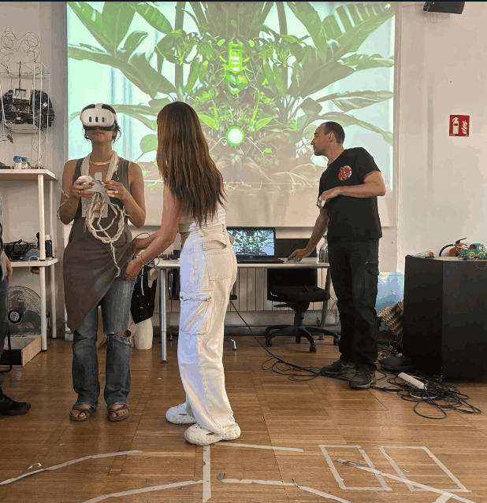
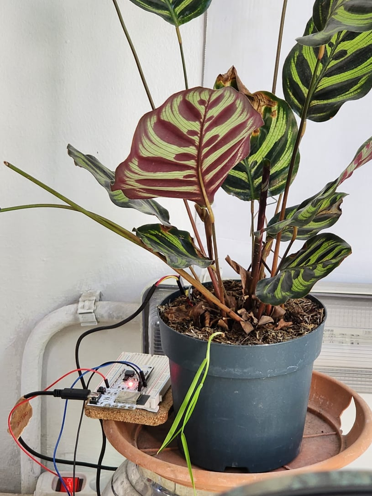

Free AI Website SoftwareReflections, discoveries, and hands and REPO.

The Planta Vibras project has been a revelation for me in understanding sensory communication and its potential to connect different forms of life. By creating an interactive installation that uses sensory data from a Calathea plant and converts it into tangible vibrations, I have been able to experience firsthand what it feels like to be a plant for a day. This approach has not only allowed me to appreciate the complexities of the plants' internal processes but also challenged my traditional perception of intelligence and communication. By integrating advanced technology with artistic sensitivity, I have created an immersive experience that is both educational and profoundly connective. This experience invites me to rethink my relationship with the natural world and motivates me to seek new forms of interaction and collaboration with other species.
Additionally, Planta Vibras opens a new path in my exploration of the possibilities of decentralized sensory perception. By shifting attention from head-centric perception to a more holistic experience involving the entire body, I have discovered a new dimension of human interaction with the environment. This project highlights the importance of the skin and other sensory organs in perceiving and understanding the world, proposing a form of communication that is more intuitive and direct. The ability to translate a plant's sensory data into a tangible and perceptible experience for humans has significant implications not only for biology and ecology but also for medicine, art, and education. By fostering greater awareness and appreciation of non-human intelligences, Planta Vibras promotes a more inclusive and collaborative approach to coexistence on the planet, opening new opportunities for innovation and interdisciplinary understanding.

Free AI Website Software